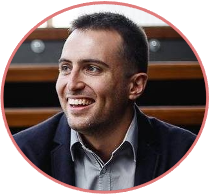

|  |
Yulian SilyanovskiCo-founder and CEO of Life Hive |
I am an enthusiastic, creative, and motivated individual, with well-developed communication, written, numerical and analytical skills with deep interest in Economics/Econometrics, IT & Innovation, Data and Stats Analysis, Consulting and
Innovative Business Strategy.
PSM I certified (Jan 2021), progressing towards PMP.
MSc Economics of Management and Organisation – Erasmus University Rotterdam, NL
2016-2018
BSc Business with Economics – Salford University of Manchester, UK
2011-2014
91st German Language High School Prof. Konstantin Galabov - Sofia, BG
2007-2011
IT (Software) Project Manager – DevMinds (Sofia, Bulgaria)
Apr 2019 - Current
Business Development, KAM and Sales Consultant – Adecco Bulgaria (Sofia, Bulgaria)
Oct 2017 - Feb 2019
Samsung Field Marketing Project Manager (Interim) – Adecco Bulgaria (Sofia, Bulgaria)
Jan 2018 - June 2018
| Redmine | Jira | SPSS |
| German **** | English ***** | Russian ** |